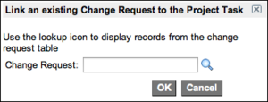

Linking Changes to Project Tasks
Contents
1 Overview
Large-scale changes approved by your organization's change approval board (CAB) might need to be implemented through new or existing projects. To bridge the gap between change management and project management, ServiceNow provides the ability to link one or more change requests to a project task. You can link an existing change request to a project task or create a new change request directly from a project task. This feature is included in project management v3, which is available starting with the Dublin release.
2 How Change Request-Project Task Links Work
When you link a project task to a change request record, a new project task link record is created. It provides the actual link between the project task record and the change request record. The project task link copies over all the attributes of the change request record and becomes a child task of the project task that you linked to the change request. The rules that govern the relationship between the project task and the project task link are the same as the rules for all parent and child tasks.
{kind=link}
| |
Note: A project task cannot have both task link records and child project tasks. When a project task is linked to a change request, you cannot also create child tasks for that project task. Likewise, when a project task has child tasks, you cannot link the parent project task to a change record. |
The project task link record is read only. You can view the project task links from a related list on the Project Task form.
{kind=link}
You can also link multiple change requests to a single project task. In this case, a project task link record is created for each link and all of the project task link records become child tasks of the project task.
{kind=link}
2.1 The Change Request-Project Task Relationship
The following items explain how values on change request records and project task link records affect each other. The relationship between project task and the project task link is governed by the same rules that apply to all parent-child tasks.
2.1.1 Start and End Dates
The project task link inherits start and end dates from the change request. However, the Project application adjusts the dates when these situations occur:
- If the project task and the change request have different planned start dates, the project task link uses the later of the two dates. For example, if the project task starts on October 1 but the change request starts on October 2, the project task link changes to October 2.
- If the change request has an earlier start date, the Time constraint value for the project task link becomes Start ASAP when the link is created. The end date remains the same as the end date specified in the change request record.
- If the change request starts and ends before the project start date, the project task link has a duration of zero (0) and therefore appears as a milestone that occurs when the project starts.
- If a change request is scheduled to start during non-work time according to the project schedule, the planned start date of the project task link ignores the schedule and starts at the time specified by the change request. However, the duration of the project task link does take the schedule into consideration. Consider this example: the project uses the default schedule, which specifies that work hours are Monday to Friday from 8 A.M. to 5 P.M. with an hour break from noon to 1 P.M. A change request with a 13 hour duration starts at midnight. The project task link would start at midnight and continue through the start of the schedule at 8 A.M., stop at noon for one hour, and then continue from 1 P.M. until 2 P.M. The total duration would be 13 hours.
2.1.2 Project Task Duration
The duration of the change request determines the duration of the project task link, and that duration is rolled up to the parent project task just as all child task durations roll up to parent tasks. The Planned start date and Planned end date in the Change Request form's Schedule section are the fields that determine the duration. If there are no planned dates on the Change Request form, the default duration is one project day if the project has a schedule or 24 hours if the project has no schedule.
2.1.3 Multiple Linked Change Requests
If you link additional change requests to a project task, additional project task links are created, and they all become child tasks of the project task. The dates roll up to the parent task. For example, if a linked project task is planned to finish on October 30, but you link a new change request that is scheduled to finish on November 30, a new project task link is created. The parent task's planned end date extends to November 30 to cover the duration of both project task links.
A change request can only be linked to one project task. It cannot be linked to multiple tasks in the same project or across multiple projects. A project task that has one or more child tasks cannot also have a project task link connecting it to a change request.
2.1.4 Project Task State
If the state of a change request changes to Pending, Open, or Work in Progress, the state of the project task link changes accordingly. If the state of the change request changes to any of the closed states, the state of the project task link changes to Closed Complete.
2.2 How Modifications Propagate Between Change Requests and Project Tasks
Modifications to a linked change request propagate to the project task link. However, the reverse is not true. You cannot modify the change request record from the Project application.
2.2.1 Modifications to a Change Request
Modifications to the following fields propagate from the change request to the project task link:
- Planned start date
- Planned end date
- State
These change request settings also roll up to the project task that is the parent of the project task link, and also up to the project record. Consider the following example: a project has not yet been started and all of its tasks are in the Pending state. If you changed the state of a linked change request record from Open to Work in Progress, the project task link, its parent task, and the project itself all change to Work in Progress.
2.2.2 Starting Project Tasks That Are Linked to Changes
When you start a project, tasks that have Start ASAP as the time constraint and have no other start dependencies start immediately. However, project tasks with linked change requests do not start automatically. The project manager must start the task manually by changing the State field to Work in Progress.
2.2.3 Closing a Project and a Change Request
Modifications made in the Project application do not propagate to a linked change request record, so closing a project does not close a linked change. When you successfully implement a change and close the project it belongs to, you must go to the change request record and manually change the state to Closed.
3 Linking Change Requests to Project Tasks
Link change requests to tasks on the Project Task form. You can link change requests only to project tasks that have no child tasks.
To link a change request to a project task:
- Open a project task that does not have any child tasks. Tasks that already have child tasks cannot be linked to change requests.
- Click one of the following related links:
- Link an Existing Change Request to Project Task
- In the dialog box that appears, enter or select the change that you want to link.
- 
- Create Change and link from Project Task
- The Change Request form appears. Enter the information in the form. The short description of the change request is taken from the project task.
{kind=link}
On the Project Task form, a message appears under the task Number field specifying that the task is linked to one or more change requests.
{kind=link}
The related list for the parent task shows the linked change in the Linked task column.
{kind=link}
On a list of project tasks, linked project tasks are highlighted in orange or appear with an orange dot:
{kind=link}
{kind=link}
On the Gantt chart, the project task appears in gray and the project task link appears in orange.
{kind=link}
4 Good Practices for Linking Change Requests to Project Tasks
You can link any change request record to a project task, regardless of the change request's schedule or state. However, as a good practice, consider the following:
- Change Schedule: The change request should have a schedule that falls within the timeframe of the project it links to, or have no values in the Planned start date and Planned end date fields in the Schedule section of the Change Request form.
- Change State: The change request should be in the Open or Pending state when it is linked. Changes that are already in progress or closed should be stopped and copied to a new change request.
{kind=link}